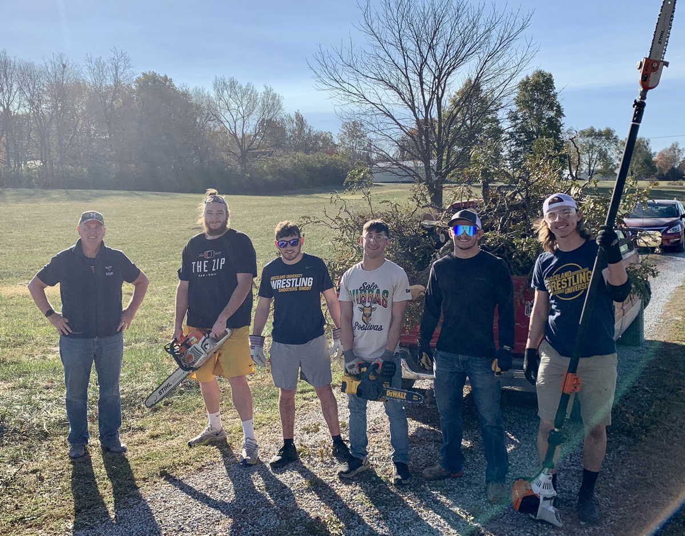
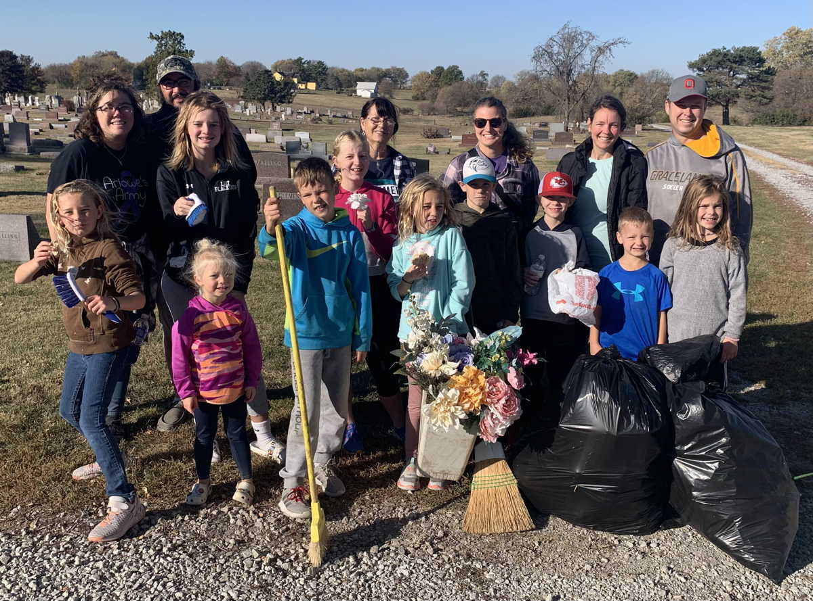
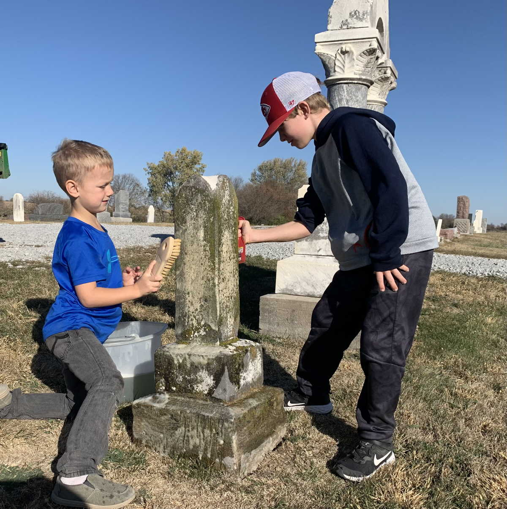
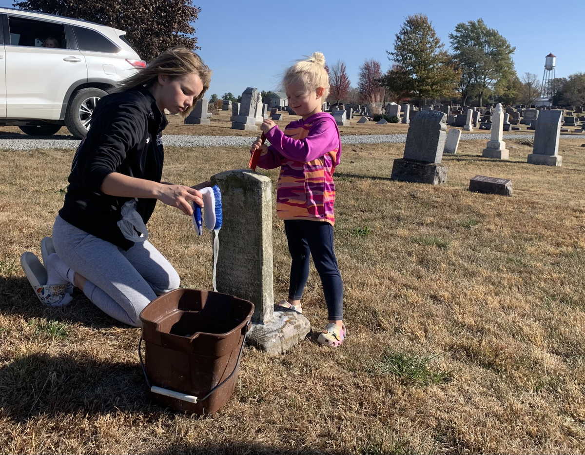
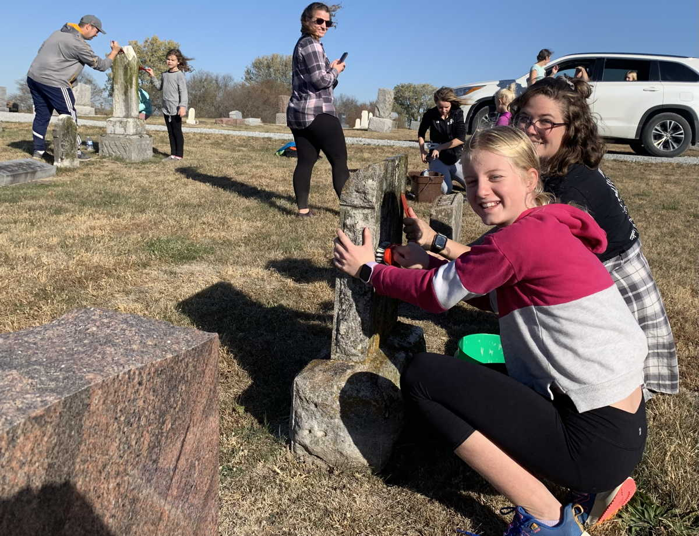
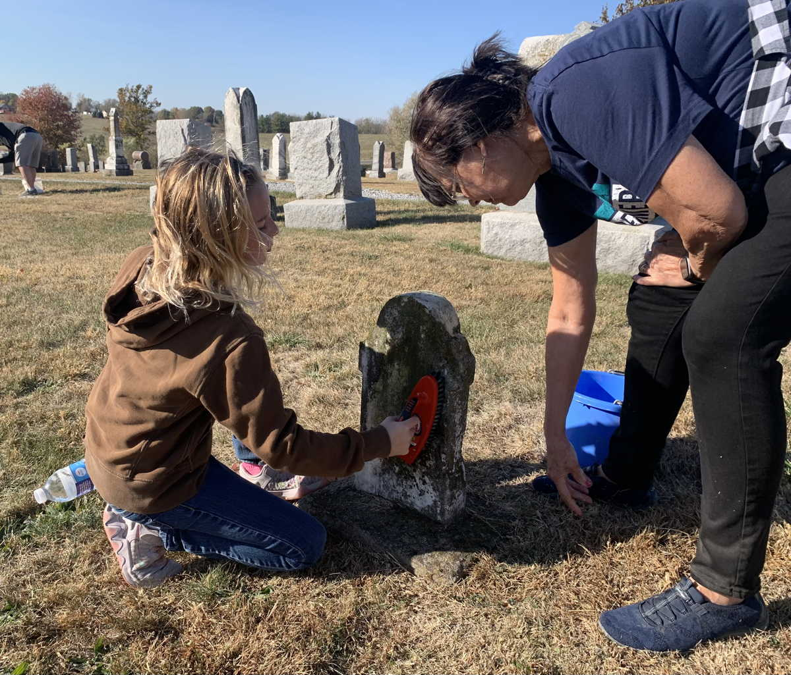
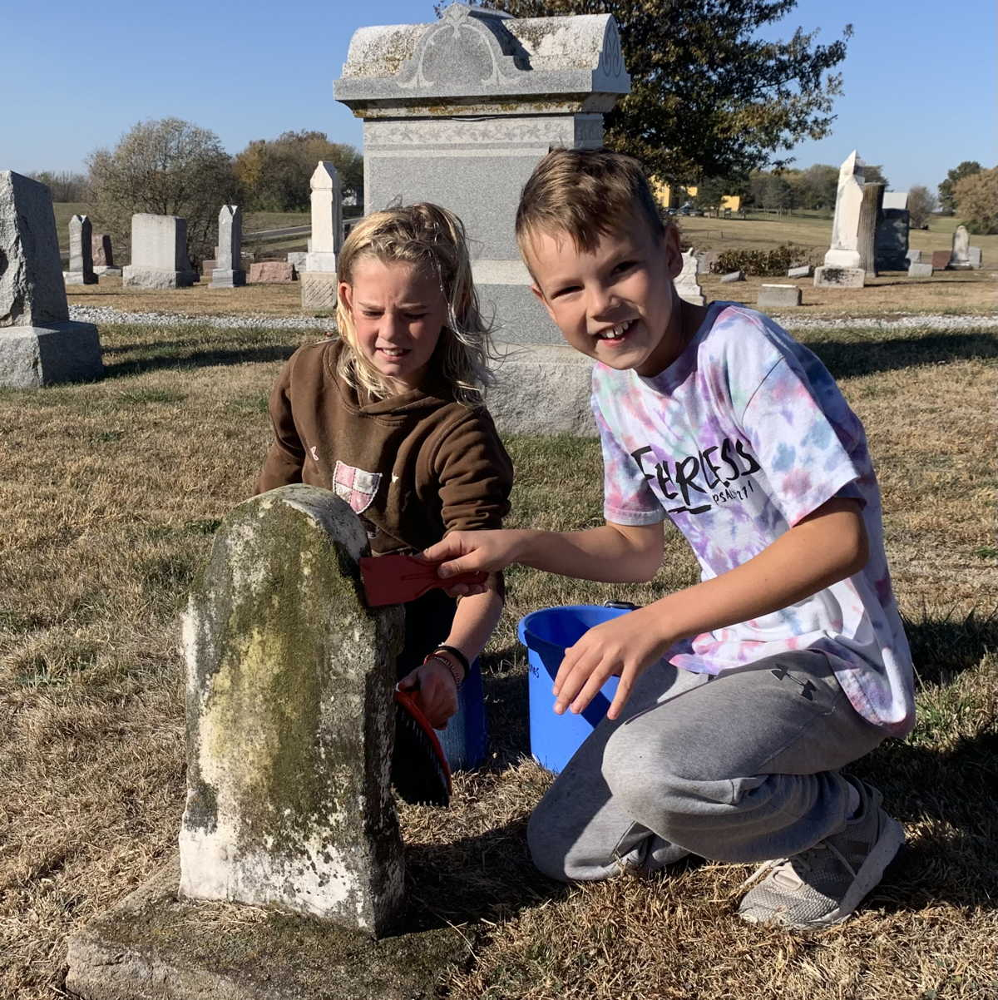
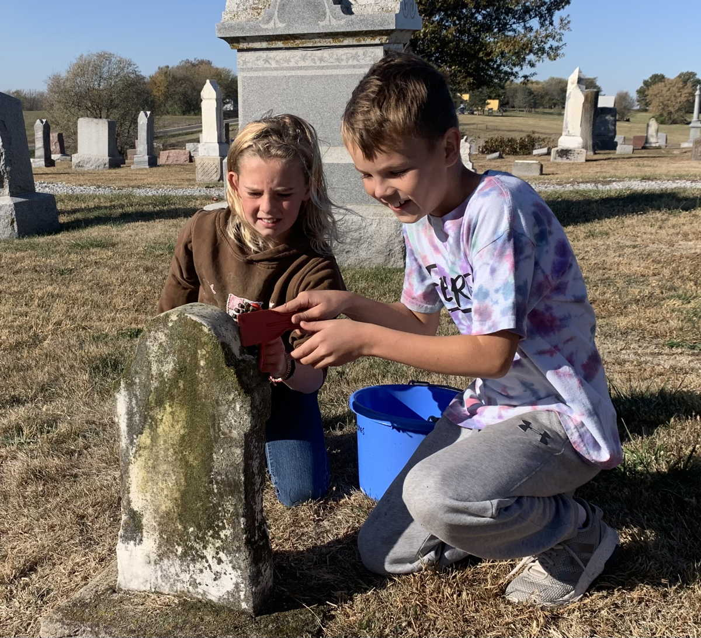

On Saturday, October 22, 2022, Lamoni volunteers participated in the annual Make A Difference Day from 9 a.m. to noon. Eight wrestlers from the Graceland University Wrestling Team came to cut and remove large tree limbs from the cemetery, under the direction of Board President Kelly Everett. They removed 11 large pickup truckloads of logs and branches to the city brush dump.
A group of 10 kids and 6 adults from the Methodist Church came to help with other tasks under the direction of Board Secretary and Sexton Jim Jones. In the first hour they swept through the cemetery to clear it of ground decorations and debris, filling 6 large industrial strength lawn and leaf bags. They spent the rest of the morning cleaning the oldest headstones to scrape away moss and scrub them with soapy water. At least 35 headstones were cleaned.







